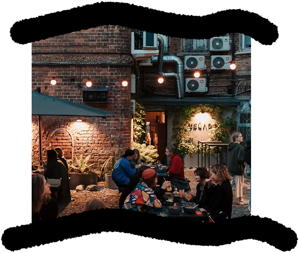

Азиатское бистро
Цейлон
ул. Большая Покровская, 9Б
(вход в арку)

Контекст
и атмосфера
Цейлон спрятан в глубине исторического квартала на крутом перепаде нижегородского рельефа. Вместо шумного проспекта за аркой открывается тихий террасный дворик — деревянные настилы и тени вековых крон.
Сюда приходят за неспешными летними вечерами, азиатскими блюдами и ощущением уюта в самом сердце города.
Детали
интерьера

Сердце внутреннего зала представляет собой декоративный витраж с тёплой скрытой подсветкой. Графичная раскладка отсылает к эстетике традиционных японских перегородок сёдзи, создавая камерный золотистое освещение даже в пасмурный день.
Секреты
для посетителей
Летом здесь готовят авторский холодный цейлонский чай со специями и охлаждающую матчу.
Идеальное время для визита — после заката солнца, когда во дворе зажигают гирлянды.
Узнать подробнее про заведение можно на их сайте!